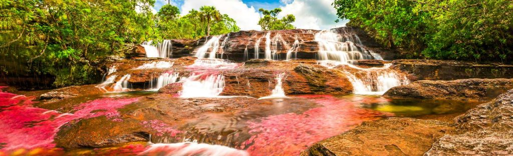

Conoce un poco más | El rio de los 7 colores.
Es una sucesión de rápidos, cascadas, correones y pocetas cuyas aguas se desprenden de la meseta sur de la serranía de la Macarena. La mejor epoca para visitalo es entre junio y diciembre. Esto es con lo que te vas a encontrar:
-
Senderos
- Sendero Los Pianos: Un sendero de aproximadamente siete kilómetros que lleva a la Cascada de la Virgen, Los Ochos, Los Cuarzos, y El Tapete.
- Sendero Salto del Águila: Un sendero de aproximadamente nueve kilómetros que es más exigente que el sendero Los Pianos.
- Sendero del Mirador: Un sendero que ofrece una vista panorámica impresionante de la región.
- Cascadas paradisíacas en medio de la selva de la Serranía de La Macarena.
- El Mirador del Río Guayabero.
- Un lugar donde se pueden avistar monos, aves y palmas de moriche.
Cascadas
Miradores
Laguna del Silencio